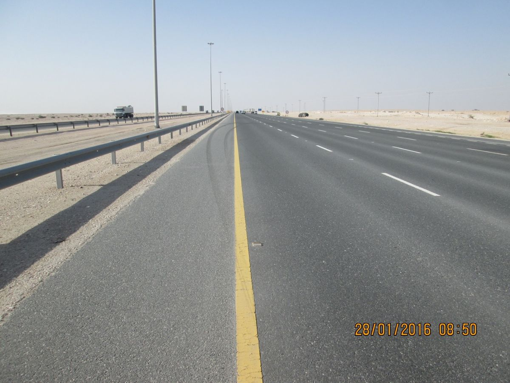
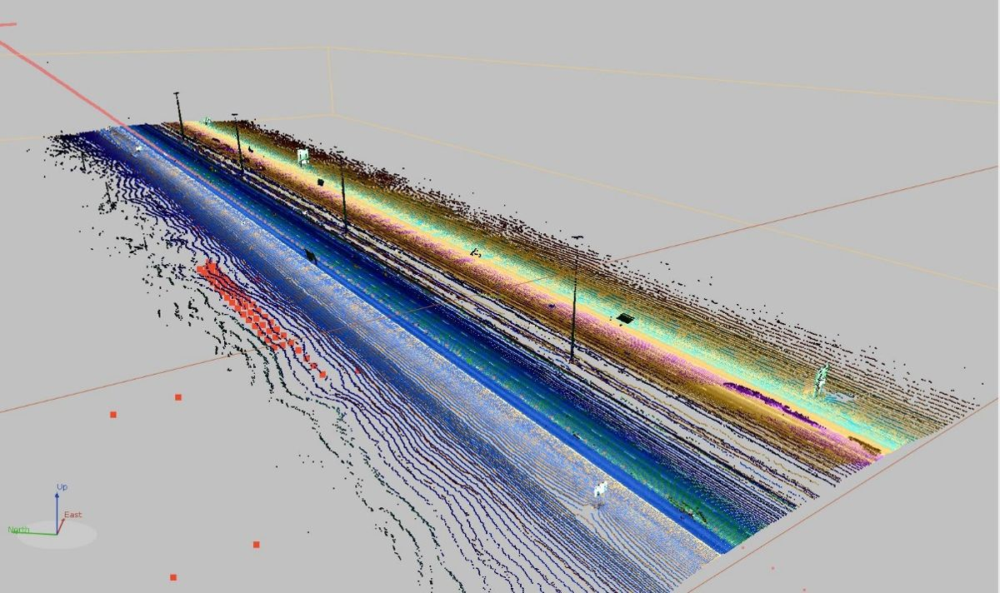
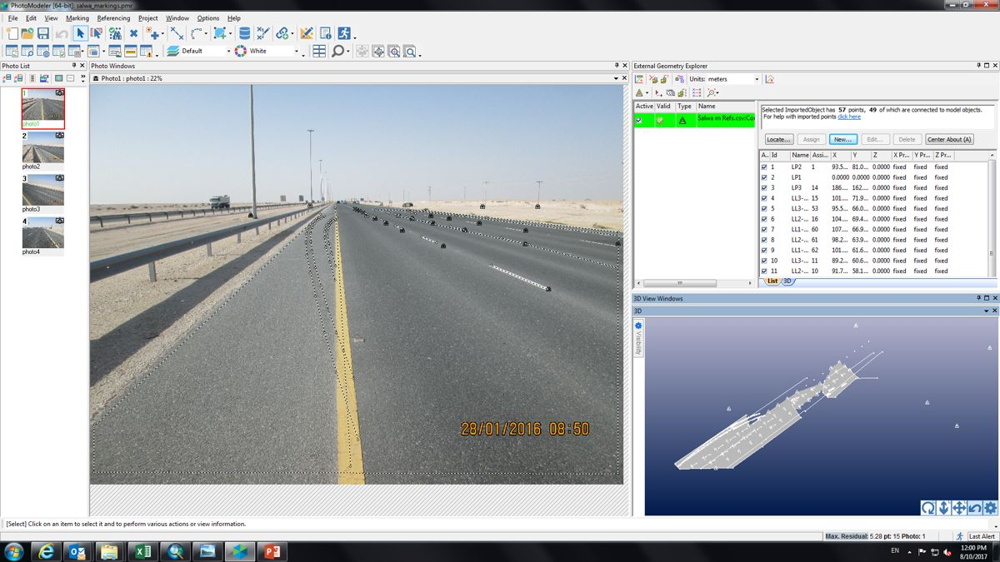
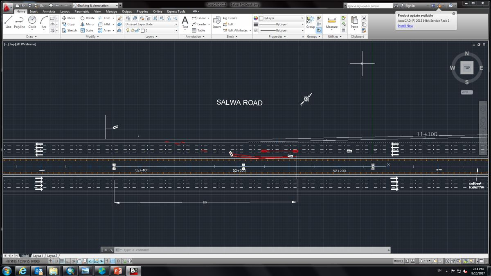
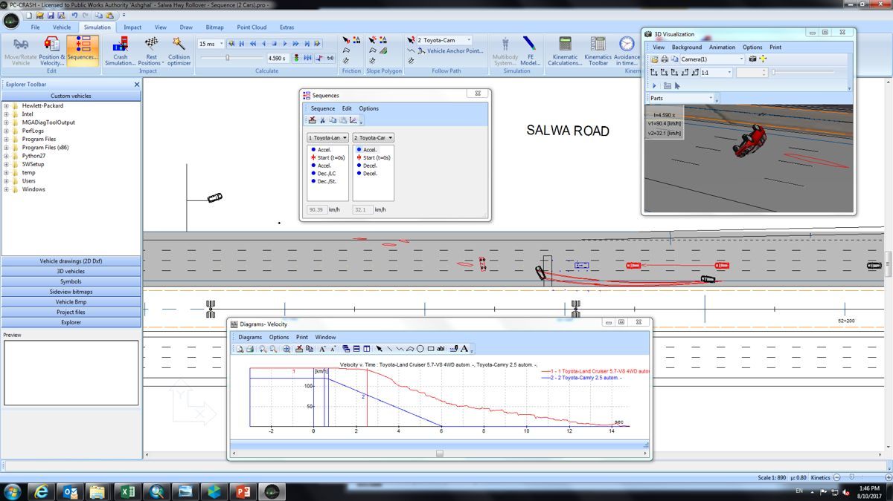

Over 25 years across Saudi Arabia, Qatar, Sudan and the USA in road safety strategy, crash data systems and network safety performance. Led the Qatar Crash Analysis System (Q‑CAS) and iRAP programme, coordinated Qatar's National Road Safety Action Plans, and now leads traffic and safety work for Riyadh's road network, including readiness for the AFC Asian Cup 2027 and FIFA World Cup 2034. Applies machine learning and AI to crash data, from RapidMiner models to AI-built dashboards.
MSc Transportation EngineeringGeorge Mason University, 2007BSc (Hons)Sudan University of Science & Technology, 1999Professional EngineerSaudi Council of Engineers
41Safety engineering assessmentsled · 13 since Feb 2024
15Collision investigationsled
4Fatal collisions investigatedon-site and reconstruction
By year
Records per year
Audits & inspectionsSafety engineering assessmentsCollision investigationsAssessments since Feb 2024, not itemised
Why observer on audits. As a government road authority engineer, Aymen is not permitted to hold a road safety auditor certificate or be on the approved auditors list. He observes third-party audits for the authority and leads its own safety assessments and collision investigations.
Collision investigation method
Crash reconstruction workflow · SUV rollover, Salwa Road
From on-site evidence to a calibrated simulation of the crash: PhotoModeler, ArcMap, point cloud data, AutoCAD and PC-Crash.

1 · Scene evidenceCapture as much evidence as possible during the on-site investigation.

2 · Known pointsGPS coordinates from site survey, GIS road assets (ArcMap) or point cloud data.

3 · PhotogrammetryReverse-engineer the unknown camera in PhotoModeler and model the scene and marks.

4 · Scene planRefine the plan in AutoCAD and export a DXF for simulation.

5 · SimulationMatch the crash to the recorded evidence in PC-Crash.
PC-Crash simulation video
The reconstructed rollover, with vehicle speeds at each moment. Press play to watch the 18-second simulation.
Career highlights
Programmes that changed how networks are managed
Featured projects
Project portfolio
Select a card to open its project poster. Filter by area of expertise, country or keyword.